コラムシフトレバー 取り外し |
| 1. 取り扱い·作業上の注意 |
参照)| 2. バッテリマイナスターミナル切り離し |
参照)| 3. フロントタイヤ直進状態調整 |
| 4. インストルメントパネルフィニッシュ パネル LWR CTR取りはずし |
 |
クリップ<ｃ>2箇所、ツメ8箇所のかん合をはずし、インストルメントパネルフィニッシュパネル LWR CTRをとりはずす。
パワーアウトレツトソケットのコネクタを切り離し、インストルメントパネルフィニッシュパネル LWR CTRを取りはずす。
スクリュ３本をはずし、インストルメントカツプホルダを取りはずす。
| 5. インストルメントパネルフィニッシュ パネル LWR取りはずし |
| 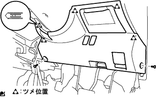 |
クリップ<a>2箇所、ツメ5箇所のかん合をはずす。
フードオープナーを切り離す。
各コネクタを切り離し、インストルメントパネル フイニツシユパネル LWRを取りはずす。
| 6. ホーン ボタンASSY取りはずし |
トルクスソケツトレンチ(T30)を使用して、トルクスボルト2本を空転するまでゆるめる。
| 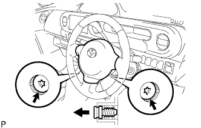 |
マイナス薄刃ドライバーを使用して、トルクスボルト2本を引き出す。
| 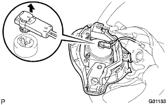 |
ホーンボタンASSYを手前に引き出す。
マイナス薄刃ドライバーを使用してロック解除し、エアバツグ用コネクタを切り離してホーンボタンASSYを取りはずす。
| 7. ステアリング ホイールASSY取りはずし |
| 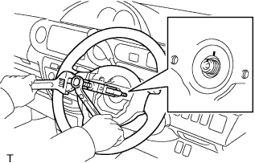 |
ナットをはずし、ステアリングホイールASSYおよびステアリングメインシヤフトASSYに合わせマークを付ける。
SSTを使用して、ステアリングホイールASSYをステアリングコラムASSYから取りはずす。
| 8. ステアリングコラム カバー取りはずし |
| 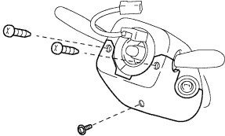 |
スクリュー3本をはずし、ステアリングコラムカバーを取りはずす。
| 9. スパイラル ケーブルSUB-ASSY取りはずし |
スパイラルケーブルからエアバツグ用コネクタおよびコネクタを切り離す。
| 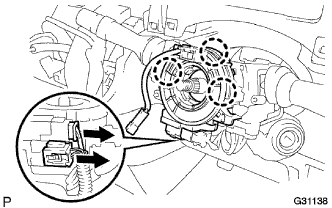 |
ツメのかん合3箇所をはずし、ターンシグナルスイツチ部からスパイラルケーブルを取りはずす。
| 10. ヘッドランプ デイマ スイッチASSY取りはずし |
コネクタを切り離す。
 |
図のツメを押し、かん合をはずしてヘツドランプデイマスイッチASSYを取りはずす。
| 11. ウインドシールド ワイパ スイッチASSY取りはずし |
| 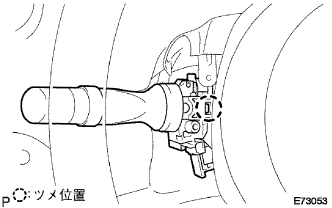 |
コネクタを切り離す。
図のツメ位置を押し、かん合をはずしてウインドシールドパイパスイツチASSYを取りはずす。
| 12. ステアリングコラムホールカバー プレート取りはずし |
| 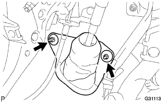 |
クリップ２個をはすし、ステアリングコラムホールカバープレートを取りはずす。
| 13. コラムシフト トランスミッション コントロールケーブルASSY切り離し |
シフトレバーをNレンジにする。
ナットをはずし、コントロールケーブルをベルクランクから切り離す。
| 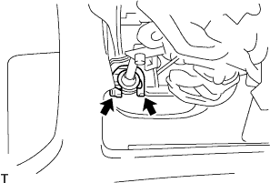 |
プライヤーを使用して、クリップの先端をはさみ込んでクリップをはずし、コントロールケーブルをコラムASSYから切り離す。
クリップをはずし、コントロールケーブルをコントロールケーブルブラケットから取りはずす。
マイナスドライバーを使用して、3箇所のツメをはずし、コントロールケーブルをエンジン側から引き抜く。
| 14. コラムシフト パーキング ロックケーブルASSY切り離し |
ケーブルのツメを縮め、パーキングロックケーブル(コラム側)を切り離す。
ボルトをはずし、パーキングロックケーブル(ペダル側)を切り離す。
| 15. ステアリング コラムASSY取りはずし |
ステアリングコラムASSYから各コネクタおよびワイヤハーネスのクランプを切り離す。
| 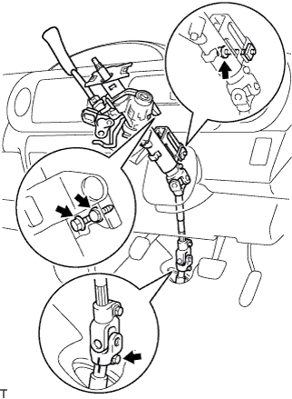 |
ステアリングコラムASSY取り付けボルト3本を緩める。
ステアリングインターミデイエイトシヤフトNo.3とステアリングスライデイングヨークに合わせマークを付ける。
ボルトをはずし、ステアリングインターミデイエイトシヤフトNo.3とステアリングスライデイングヨークを切り離す。
コラムASSY取り付けボルト３本をはずす。
| 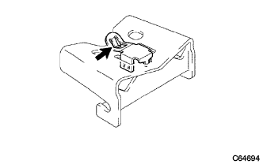 |
ステアリングコラムクランプとインストルメントパネルリインホースメントASSYとのかん合をはずした状態で、ステアリングコラムASSYを手前に引き取りはずす。